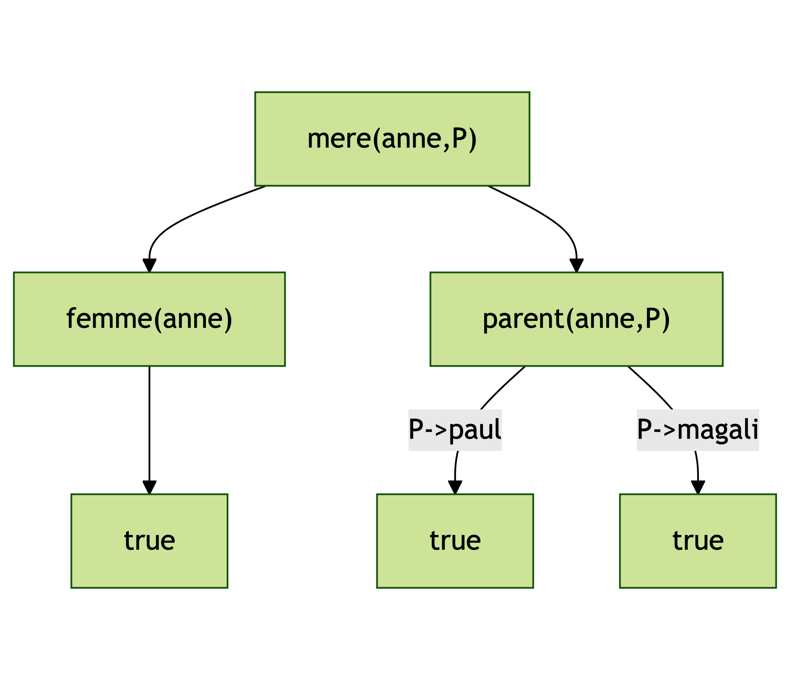

D. Plaindoux ~ @dplaindoux@functional.cafe
Impératif
Séquence
d'instructions exécutées pour
modifier l'état
Objet
Définition et interaction
de briques appelées
objets
Fonctionnel
Considère le calcul
en tant
qu'évaluation de fonctions
Logique
Exprimer les problèmes
sous forme de
prédicats
Système formel pour raisonner
X ∈ Variables, C ∈ Constante, f ∈ Symbolef
t ::= X | C | f(t1,...,tn)
P ∈ SymboleP
e ::= ¬e | e1∧e2 | e1∨e2 | e1⇒e2 | P(t1,...,tn) | ∀X.e | ∃X.e
∀X.∀Y.parent(X,Y) ∧ femme(X) ⇒ mere(X,Y)
Trouver une substitution σ qui appliquée
à deux termes les rend
identiques
2+X ≟ Y+1, σ = {X→1,Y→2}
Problème de la Solution principale
Alain Colmerauer & Philippe Roussel ~ 1972
X1chienmontant(1_000,euro)A ::= atome | foncteur
A. pour les faits ou assertions
A0 :- A1, ..., An. pour les règles
femme(anne).
parent(anne, paul).
parent(anne, magali).
mere(X,Y) :- femme(X), parent(X,Y).
∀X, ∀Y, mere(X,Y)
est vrai si parent(X,Y) est vrai et femme(X) est vrai
?- mere(anne,paul).
mere(anne,paul) est-il vrai ?
femme(anne).
parent(anne, paul).
parent(anne, magali).
mere(X,Y) :- femme(X), parent(X,Y).
∀X, ∀Y, mere(X,Y) est
vrai si parent(X,Y) est vrai et femme(X) est vrai
?- mere(anne,P).
∃P, mere(anne,P) est-il vrai
?
Repose sur du Don't know non-determinism
À chaque selection il y a un point rebroussement

equals(X,X).
type (_,_) eq = Refl : ('a,'a) eq
Ne repose pas sur l’hypothèse du monde clos
not(B) :- call(B), !, fail.
not(_).
Repose sur des constructions non logiques
?- not(homme(X)).
Le but réussit, mais sans donner de valeur à X
L'unification intègre un traitement plus complet des arbres et des listes, un traitement numérique et un traitement de l'algèbre de Boole
Alternative avec les solveurs SMT
Puis-je emprunter ? Question fermée !
?- monthlyInstalments(
loan(amount(200_000),rate(3.15)),
ecoPTZ(amount(50_000)),
ptz(amount(90_000)),
monthly(Instalments),cost(LoanCost),months(300)
),
debt(family(5000),monthly(Instalments),debtPercent(25)).
No solution
Comment négocier ?
?- monthlyInstalments(
loan(amount(200_000),rate(3.15)),
ecoPTZ(amount(50_000)),
ptz(amount(90_000)),
monthly(Instalments),cost(LoanCost),months(300)
),
debt(family(5000),monthly(Instalments),debtPercent(25)).
Comment négocier ? Question ouverte !
?- monthlyInstalments(
loan(amount(200_000*X),rate(3.15)),
ecoPTZ(amount(50_000)),
ptz(amount(90_000)),
monthly(Instalments),cost(LoanCost),months(300)
),
debt(family(5000),monthly(Instalments),debtPercent(25)).
Comment négocier ? Question ouverte !
?- monthlyInstalments(
loan(amount(200_000*X),rate(3.15)),
ecoPTZ(amount(50_000)),
ptz(amount(90_000)),
monthly(Instalments),cost(LoanCost),months(300)
),
debt(family(5000),monthly(Instalments),debtPercent(25)).
Solution <1>:
| X = 0.8000703416684796
| Instalments = 1250.0
| LoanCost = 74985.9316663041
Comment négocier ?
?- monthlyInstalments(
loan(amount(200_000),rate(3.15)),
ecoPTZ(amount(50_000)),
ptz(amount(90_000)),
monthly(Instalments),cost(LoanCost),months(300)
),
debt(family(5000),monthly(Instalments),debtPercent(25)).
Comment négocier ? Question ouverte !
?- monthlyInstalments(
loan(amount(200_000),rate(3.15)),
ecoPTZ(amount(50_000)),
ptz(amount(90_000)),
monthly(Instalments),cost(LoanCost),months(300)
),
debt(family(5000*X),monthly(Instalments),debtPercent(25)).
Comment négocier ? Question ouverte !
?- monthlyInstalments(
loan(amount(200_000),rate(3.15)),
ecoPTZ(amount(50_000)),
ptz(amount(90_000)),
monthly(Instalments),cost(LoanCost),months(300)
),
debt(family(5000*X),monthly(Instalments),debtPercent(25)).
Solution <1>:
| Instalments = 1442.7521246925255
| LoanCost = 92825.63740775763
| X = 1.1542016997540203
Quels profils pour une offre immobilière ?
?- simulation(
in(price(200_000), area(150), location("Gratens")),
out(renovation(Renovation), esthetical(Esthetical),
ecoPTZ(EcoPTZAmount), ptz(PTZAmount),
salary(Salary), members(Members), incomes(Incomes),
installments(Instalments), loanCoast(LoanCost),
duration(Months), debts(Debt)
)
).
Tinder de l'immobilier
Γ ⊢ A : (x:R) -> T2 Γ ⊢ B : R
--------------------------------
Γ ⊢ A B : T2[X:=B]
type_system(
Strategy,
Gamma |- (A @ B) : T1,
proof(abstraction,LOG1,LOG2,RED)
) :-
member(Strategy,check::infer_type::nil),
!, -- green cut
type_system(Gamma |- A : (X:R) -> T2,LOG1),
type_system(Gamma |- B : R,LOG2),
beta(Gamma,T2[X:=B],T1,RED).